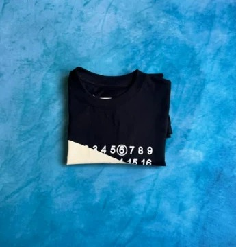
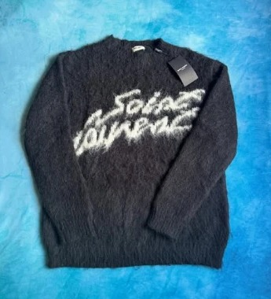
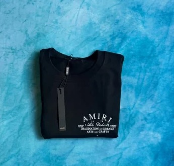
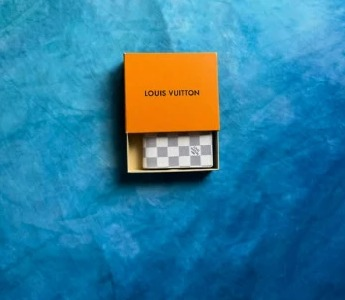
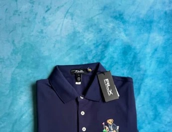
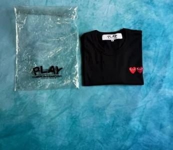
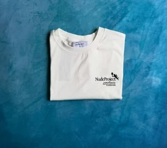
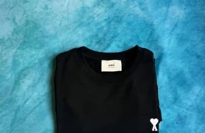
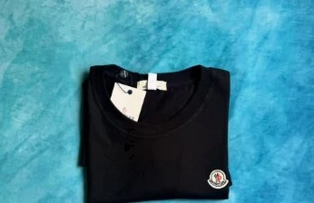

◆ O acervo
O acervo.
11 grifes · 4 países · 100% original
Fotos reais das peçasDeslize →









11 grifes · 4 países · 100% original

Mais fotos, medidas e tamanhos. Não achou? Fazemos encomendas.